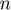
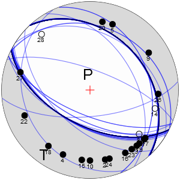
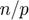
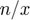
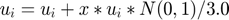
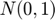
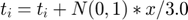
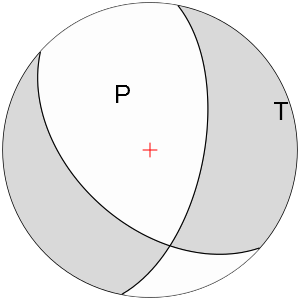
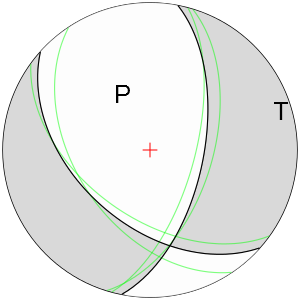
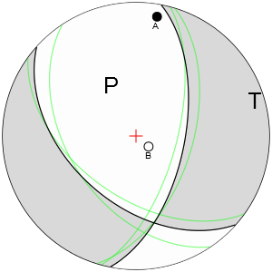

Using focimt command line application
focimt application can be either used directly in a shell mode (command line) or by using focimt.m routine in MATLAB environment. It is also worth to note that MATLAB environment allows to call shell programs directly from command window by preceeding the application name ('focimt') with exclamation mark. In this description we will use this MATLAB feature to present the direct use of focimt application and key command line options. The full list of available command line options is presented later in this section. User can invoke the full list of command line options directly from MATLAB environment by typing focimt -h. Note that NOT all options of focimt are available from within focimt.m routine.
Contents
Basic usage
To perform the seismic moment tensor inversion in time domain using amplitude data stored in RAW ASCII input file format in example1.txt file stored in /examples directory and output the graphical representation of the solution to PNG and PDF formats:
!focimt -i ./examples/example1.txt -t PNG,PDF -o test01a
This will perform the constrained double-couple moment tensor inversion and the resulst will be stored in files with test01a prefix. The call should result in creation of two additional files (beach balls) in PDF and PNG formats:

focimt is capable to generate four types of output files with graphical representation of the seismic moment tensor: One raster format PNG and three vector formats SVG, PS and PDF. Note the vector formats are suitable for high-quality publishing.
By default, only double-couple constrained moment tensor is calculated. To calculate full, deviatoric and double-couple constrained moment tensors at once for a particular event or set of events, option -s FTD must be used, where [F], [T], and [D] corresponds to full, deviatoric and double-couple solutions, respectively, as in the example below:
!focimt -i ./examples/example1.txt -t PNG -s FTD -o test01b
The successful execution results in generation of 3 PNG files with filename suffixes -full, -deviatoric, and -dc and corresponding to the [F]ull moment tensor solution (ISO+CLVD+DC), deviatoric or [T]race-null constrained solution (ISO=0,CLVD+DC) and [D]ouble-couple constrained solution (ISO=0,CLVD=0,DC). The decomposition if performed by default using Jost and Herrmann (1989) approach. The alternative decomposition into ISO+CLVD+DC parts may be performed following Vavrycuk (2001) method (however, this will not change the shape of beach ball plot of seismic moment tensors, buy only affects the percentage of moment tensor components).


The graphical representation of seismic moment tensor solution and image size may be adjusted with -b and -z options. Also, the stereographic projection type may be modified using -p option. For example, to calculate only the deviatoric solution and create an upper-hemisphere equal-angle projection of the seismic moment tensor without center cross and station polarity markers, and output it to the PNG file with with picture heigh and with of 300 pixels, the following call is necessary:
!focimt -i ./examples/example1.txt -t PNG -s T -p WU -b ACD -z 300 -o test01c
which results in the following picture:

Moment tensor inversion parameters
By default, the moment tensor inversion is performed using L2 norm. This sometimes may NOT be an optimal case, especially in situations where one expect to have input data with large outlayers. In this case, the program allows to perform the inversion with L1 norm, which is less sensitive to large errors in the input data. However, this results in a radically increased computation time, so it is unsuitable for large datasets. In axample below we perform the full moment tensor inversion using L1 norm and export the result to PNG file. This can be achieved using following command (note -n option to specify norm type):
!focimt -i ./examples/example1.txt -t PNG -z 300 -s F -n L1 -o test01d
The resulting graphical representation of the full moment tensor looks as follows:

and it is actually significantly different from the full moment tensor solution obtained earlier using the default L2 norm:
Handling more input data at once
The seismic moment tensor inversion can be performed for multiple files at once. Simply, the input ASCII file in either RAW or 1D velocity model formats may contain multiple blocks composed of event header data - event phase data blocks. This greatly speeds up the processing of input data for the purpose of seismic moment tensor inversion for numerous events.
Consider an example of the seismic moment tensor inversion of acoustic emission input data for the deviatoric seismic moment tensor. The input file example3.txt contains 50 events forming a tight cluster. In this example we calculate their full seismic moment tensors and export the output to PNG files. This can be achieved by issuing the following command:
!focimt -o test03a -t PNG -s F -z 200 -i ./examples/example3.txt
This will result in 50 PNG files generated in the current directory. Here is example of 10 of them:


Handling 1D velocity model input files
By default, focimt expects data in RAW ASCII format. Alternatively, the package User is capable to provide input data for the seismic moment tensor inversion in 1D velocity model format. However, this type of input format data must by provided together with input 1D velocity model. As of version 3.1.30 of focimt application, the seismic stations may located below the sea level as well as below the seismic source.
The 1D velocity model is provided using -m option followed by the path to ASCII file containing the model. The sample 1D velocity model file is located in ./examples directory.
The ./examples directory contains two files example2_raw.txt and example2_raw.txt with input event/phase data for the seismic moment tensor inversion. Both files display in fact the same phase data, however the first one is in the RAW format and the second one is provided in 1D velocity model format. We can test now whether they both result in the same moment tensor solutions:
First, calculate the full moment tensor solutions of two earthquakes using the RAW input file:
!focimt -o test02a_raw -t PNG -s F -z 300 -i ./examples/example2_raw.txt
This results in the following graphical representation of the moment tensor solution:


Secondly, we calculate the same moment tensor solutions using the 1D velocity model input file. In this case we have to provide additional 1D velocity model that will be used by 1D ray-tracing routine:
!focimt -o test02a_1d -t PNG -s F -z 300 -i ./examples/example2_1d.txt -m ./examples/vmodel.txt
This results in the following beach balls for two earthquakes:


As one can see, both solutions are identical regardles of input file format chosen. To create input data in for the examples above, the auxiliary function genmt_vel1d.m from the package has been used. The detailed description of both input file formats is presented here.
Station Jacknife test
The station Jacknife test can be performed by adding -j option to the command line. When this option is specified, the seismic moment tensor inversion is firstly performed (as usual) with all phase information provided by the User. In the following, a series of  moment tensor inversions will be performed using modified input datasets. Each modified input dataset will have one (different) station removed from the original input data. This tests aims to visualize potential problems with moment tensor inversion results if one input station has a strong influence on the seismic moment tensor solution.
Again, we used the example ASCII file above to test the stability of full moment tensor inversion:
!focimt -i ./examples/example1.txt -t PNG -s F -j -z 300 -o test01e
The graphical representation of the moment tensor inversion while using a Jacknife test looks as follows:

The shading corresponds to the original full moment tensor solution where all stations were used. The additional blue, green and red lines (the latter is not seen in the case presented) corresponds to nodal planes of Jacknife solutions with the color corresponding to the sense of motion of the fault plane. The blue, green and red color of the additional nodal planes corresponds to normal, strike-slip and thrust fault.
Input data resampling
In addition to the seismic moment tensor inversion solution calculated from the original input data, additional seismic moment tensors may be calculated using resampled input dataset enabling uncertainty assessment. This procedure is handled by -rp, -rr, -ra and -rt options, typically followed by the number of resamplings of the initial input dataset and an auxiliary parameter characteristic for each type of resampling method (see below).
The application allows to perform four types of input data resampling (i.e. the following input parameters may be biased):
- Polarity Resampling (option -rp)
- Amplitude Resampling (option -ra)
- Station Rejection Resampling (option -rr)
- Takeoff Angle Resampling (option -rt)
The input data resampling options may be combined. In other words, User may wish to bias the takeoff angles (option -rt) as well as the polarities (option -rp) for the same input data file. The number of resamplings will be equal to the number of resamplings specified in the last -r option in provided command line call.
In the Polarity Resampling (option -rp), the sign of each input phase amplitude may be flipped with the probability equal to p*100%. Let's assume we know that up to 1% of input phase data display incorrect phase polarity. We now may test how this potential polarity bias influence the resulting seismic moment tensor inversion using the polarity resampling. In addition to the moment tensor calculated from the original input phase data we generate 100 additional resampled datasets assuming that up to 1% of phases in each resampled dataset may have flipped polarities. This can be achieved by issuing the following command:
!focimt -i ./examples/example1.txt -t PNG -s D -rp 100/0.01 -z 300 -o test01f
This result in the following double-couple constrained moment tensor:

In Station Rejection Resampling (option -rr, followed by ), up to p*100% phases may be removed from the input phase data. This is somehow similar to the behavior of -j option, i.e. to Jacknife Test. However, in Jacknife Test, the number of resampled input datasets is always equal to the number of phase data and in each perturbed input phase dataset only one (different) station is removed. In Station rejection resampling each phase may removed from the input resampled dataset with probability of p*100%. For example, if p=0.5, each resampled input dataset would contain on averagfe only 50% of the original input phase data. Typically, we would like to reject only a few stations to investigate how these influence the seismic moment tensor inversion results, therefore the p value should be small.
For example, to perform the 200 resamplings of the original dataset assuming on average that 2% of stations is rejected from the resampled datasets, the following code should be executed:
!focimt -i ./examples/example1.txt -t PNG -s D -rr 200/0.02 -z 300 -o test01k
This result in the following double-couple constrained moment tensor:
The Amplitude resampling (option -ra) biases all input amplitude data by adding the noise. This option performs additional seismic moment tensor inversions on resampled input datasets with randomly perturbed input amplitude data. The amplitude resampling is performed using -ra option followed by two numbers . A series of additional seismic moment tensor inversions is performed on resampled input data in addition to the regular seismic moment tensor inversion using original input data. For each resampled input dataset, the input phase amplitude recorded at station is modified according to the following formula:  where  is a random value drawn from a normal distribution with mean 0 and standard deviation 1.
For example, to perfom 300 resamplings of the original input dataset assuming that amplitudes may change by a factor of 2 (+-100%), the following code should be executed (note the division by 3.0 in the formula above implies the factor of 2 in amplitude statistically reached or exceeded only in approximately 1% of resampled phases, whereas in %99 phases the factor is lower than 2):
!focimt -i ./examples/example1.txt -t PNG -s D -ra 300/1.0 -z 300 -o test01m
This result in the following double-couple constrained moment tensor:
Finally, the Takeoff Angle Resampling procedure (option -rt) perturbs the input takeoff angle values. Similarly to Amplitude Resampling, the takeoff angle of each phase is modified using the following formula: , where N(0,1) means a random sample drawn from Gaussian distribution of mean 0 and standard deviation 1. The takeoff angle resampling may be used to simulate the uncertainties in the velocity model. The typical dispersion should not exceed a couple of degrees.
Outputting inversion results to ASCII output file
focimt is capable to export output moment tensor data to a customizable ASCII output text files. The option governing text output is -d followed by selected UPPERCASE or lowercase characters and eventually an asterisk '*' sign. Each character in the argument value string determines different parameter or set of parameters to export and the order of characters determine the order of columns in output ASCII file. Finally, once User specify the character(s) in lowercase, they will be additionally formatted in an eye-friendly manner.
The following table display the available output data together with corresponding letter codes.
| character | Description |
| M | Moment tensor components in Aki's convention: M11,M12,M13,M22,M23,M33. The moment tensor components are in [Nm] units. |
| C | Moment tensor components in CMT conventions: M33,M11,M22,M13,-M23,-M12. The moment tensor components are in [Nm] units. |
| F | Fault plane solutions in format: STRIKEA/DIPA/RAKEA/STRIKEB/DIPB/RAKEB. All values are provided in degrees and follows typical seismological convention. |
| D | Decomposition of seismic moment tensor into Isotropic (ISO), Compensated linear vector dipole (CLVD) and double couple (DC) in format: ISO/CLVD/DC. The numbers are provided in percents and calculated according to Jost and Herrmann (1989) approach. |
| Y | Decomposition of seismic moment tensor into Isotropic (ISO), Compensated linear vector dipole (CLVD) and double couple (DC) in format: ISO/CLVD/DC. The numbers are provided in percents and calculated according to Vavrycuk (2001) approach. |
| A | P/T/B Axes orientations in format: PTREND/PPLUNGE/TTREND/TPLUNGE/BTREND/BPLUNGE. All values are in degrees and trends ranging 0-360 degree and plunges ranging 0-90 degrees (0 - horizontal, 90 - vertical). |
| W | Seismic moment, total seismic moment, maximum error of the seismic moment tensor estimate and the moment magnitude calculated using Hanks & Kanamori formula. The first three values are in [Nm] units. |
| Q | Quality index (used internally) |
| T | Fault type. 'SS','NF' or 'TF' will be exported depending whether the faulting style is strike-slip, normal or thrust, respectively. The calculation of faulting type is based on plunges of P, T and B axes. |
| U | Vector of synthetic amplitudes (moments) calculated (the number of exported values correspond to the number of phases in the input file). |
| E | RMS Error calculated between theoretical and measured amplitudes (moments) scaled to measured values, see |
| V | Diagonal elements of the MT covariance matrix in the following order: C11, C22, C33, C44, C55, C66 |
| * | Exports a new line character. |
As an example, specifying '-d FAD' option exports firstly fault plane solutions, then P, T and B axes directions and finally the moment tensor decomposition using ISO/CLVD/DC convention. The output ASCII file will have the following structure:
STRIKEA/DIPA/RAKEA/STRIKEB/DIPB/RAKEB/PTREND/PPLUNGE/TTREND/TPLUNGE/BTREND/BPLUNGE/ISO/CLVD/DBCP
Consider an example of seismic moment tensor inversion of two events. We would like now to produce two types of moment tensor solutions: full and deviatoric (option -s FD) and export the fault plane data (strike, dip and rakes) as well as moment tensor decompositions (ISO/CLVD/DC) into the text file. This can be achieved by calling:
!focimt -o test_export01a -i ./examples/example2_raw.txt -t SVG -s FD -d FD
Six files will be generated. Four of them will be graphical representations of the seismic moment tensor solutions for two events in SVG format and two types of moment tensors requested. The remaining two files will contain the ASCII output, one for deviatoric and one for the full moment tensor solutions.
Auxiliary options of focimt application
focimt provides a simple way to generate a double-couple graphical representation of the seismic moment tensor solution in a form of beach ball directly from fault plane solution parameters and (optionally) station and polarity information. This can be achieved by -f option:
In the easiest form, the strike, dip and rake parameters is required to plot a simple beach ball picture. To plot the fault plane solution of the fault with strike/dip/rake = 11/60/-50[deg] an save it to a PNG file with size of 300 pixels:
!focimt -o fault01a -f 11/60/-50 -z 300 -t PNG
with the resulting beach ball

Note the output file name does not have any prefixes or suffixes as in the case of moment tensor inversion from the ASCII input file.
It is also possible to provide more fault plane parameters and produce a plot with multiple nodal lines, similar to what is plotted when station Jacknife test or Boostrap resampling option is used. In this case, the first fault plane nodal line is painted with black color and the remaining nodal lines are painted according to the sense of motion. To achieve such effects, option -fj is used and the data from following nodal lines are separated with ':' character as in the example below:
!focimt -o fault01b -fj 11/60/-50:15/65/-42:17/55/-55 -z 300 -t PNG

The example above draws three nodal lines in total with strike/dip/rakes 11/60/-50 (main nodal line), 15/65/-42 and 17/55/-55 (auxiliary nodal lines).
In addition, the stations can be plotted as an overlay in any of the above two examples by using option -fs followed by ':'-separated station information. The station information is provided in azimuth/takeoff/polarity/name format. Consider we want to add two stations to the example above:
!focimt -o fault01c -fj 11/60/-50:15/65/-42:17/55/-55 -fs 10/80/1/A:130/10/-1/B -z 300 -t PNG
resulting in the following beach ball:

The azimuth of station is measured from north positive towards east. The station takeoff is measured from vertical direction.
Command line options
The full list of command line options of focimt can be displayed in console window by calling:
!focimt -h
References
Jost, M. L., and R. B. Herrmann (1989), A student’s guide to and review of moment tensors, Seismol. Res. Lett., 60, 37–57.
Usage: focimt [options [args]]
--help, -h Displays this information
--input, -i <args> Full path to the input file
--output, -o <args> Output file name (without extension).
If specified, the output solution data in ASCII format will be exported to
a single file. Otherwise, 'fileid' field from input file will be used
instead and moment tensor solution data will be exported to multiple files.
--solution, -s <args> Output solution type.
Arguments: [F][T][D] for the (F)ull, (T)race-null and (D)ouble-couple
solutions. Defines which moment tensor inversion will be performed. The
default option is '-s D'. Combine three options to export desired moment
tensor solutions, e.g. '-s DFT' will produce all three solutions at once.
--type, -t <args> Output file type.
Arguments: [NONE][PNG][SVG][PS][PDF] for different output file types.
Produce graphical representation of the moment tensor solution in a form of
the beach ball. More than one output file format can be specified. The
default value is '-t PNG'.
--norm, -n <args> Norm type.
Arguments: [L1|L2] for L1 and L2 norm, respectively. Defines norm used in
seismic moment tensor inversion. The default option is '-n L2' (faster).
When Jacknife method is used the option is ignored and L2 norm is always
used.
--projection, -p <args> Projection type.
Arguments: [W|S][U|L]: Defines projection for the graphical representation
of the seismic moment tensor. Choose either (W)ulff projection or (S)chmidt
projection. Then select (U)pper hemisphere or (L)ower hemispere projection
The default option is '-p SL' (Schmidt projection, Lower hemisphere).
--ball, -b <args> The details of the beach ball picture
Arguments: [S][A][C][D]: Defines features of the graphical representation
of seismic moment tensor. Plot (S)tations, (A)xes, (C)enter cross, best
(D)ouble-couple lines. The default option is '-b SACD' (all features are
displayed on the beach ball.
--dump, -d <args> Output data format and order.
Arguments: [M][C][F][D][A][W][Q][T][U][*].
[M]: Moment tensor components in Aki's convention: M11,M12,M13,M22,M23,M33.
The moment tensor components are in [Nm]
[C]: Moment tensor components in CMT conventions: M33,M11,M22,M13,-M23,-M12
The moment tensor components are in [Nm]
[F]: Fault plane solutions in format: STRIKEA/DIPA/RAKEA/STRIKEB/DIPB/RAKEB
(all values are in degrees)
[D]: Decomposition of the moment tensor into Isotropic, Compensated linear
vector dipole and double-couple in format: ISO/CLVD/DBCP. The numbers
are provided in percents and calculated according to Jost and Herrmann
(1989) approach.
[Y]: Decomposition of the moment tensor into Isotropic, Compensated linear
vector dipole and double-couple in format: ISO/CLVD/DBCP. The numbers
are provided in percents and calculated according to Vavrycuk (2001)
approach.
[A]: P/T/B Axes orientations in format:
PTREND/PPLUNGE/TTREND/TPLUNGE/BTREND/BPLUNGE
All values are in degrees.
[W]: Seismic moment, total seismic moment, maximum error of the seismic
moment tensor estimate and the moment magnitude calculated using
Hanks & Kanamori formula. The first three values are in [Nm]
[Q]: Quality index
[T]: Fault type. 'SS','NF' or 'TF' will be exported depending whether the
faulting style is strike-slip, normal or thrust, respectively.
[U]: Vector of synthetic displacements calculated (the number of exported
numbers correspond to the number of amplitudes in the input file.
[E]: Scaled RMS Error calculated between theoretical and measured seismic
moments.
[V]: Diagonal elements of the MT covariance matrix in the following order:
C11, C22, C33, C44, C55, C66
[*]: Export new line character
NOTE #1:
The order of arguments determine to order of output. For example -d FAD
exports firstly fault plane solutions, then P, T and B axes directions and
finally the moment tensor decomposition into ISO/CLVD/DBCP. The output file
will have the following structure:
STRIKEA/DIPA/RAKEA/STRIKEB/DIPB/RAKEB/PTREND/PPLUNGE/TTREND/TPLUNGE/BTREND
/BPLUNGE/ISO/CLVD/DBCP
NOTE #2:
Use lowercase arguments in order to export data in eye-friendly format.
--model, -m <args> Velocity model file (with extension)
Velocity model in HYPO71 format. Imposes different ASCII input file format.
--jacknife, -j Performs station Jacknife test.
--amplitude, -a <args> Perform amplitude resampling.
Arguments: x[/y] where x is a floating-point positive number that describes
the level of noise applied to each amplitude: A+x*A*N(0,1)/3 where N is a
normal distribution with mean 0 and std 1. The default value of x is 1
(i.e.amplitude vary by a max. factor of ~2). Optional parameter /y is
a number of samples (default value is 100).
--drawfault, -f <args> Generate picture with fault plane solution
Arguments: strike/dip/rake
--drawfaults, -fj <args> Generate picture with jacknife solutions
Arguments: strike/dip/rake[:s1/d1/r1][:s2/d2/r2]...
--drawstations, -fs <args> Generate picture with station and polarity data
Arguments: azimuth/takeoff/polarity/name[:a2/t2/p2/n2][:a3/t3/p3/n3]...
--size, -z <args> Beach ball file size
Size of the beach ball figure in pixels.
--resampling_polarity, -rp <args> Perform phase polarities resampling
Performs additional MT inversions on resampled input data with randomly
toggled polarities.
Arguments: x/y where x is the number of resamplings of the original dataset
and y is the fraction of reversed amplitudes.
--resampling_rejection, -rr <args> Perform station rejection resampling
Performs additional MT inversions on resampled input data with randomly
rejected stations.
Arguments: x/y where x is the number of resamplings of the original
dataset and y is the fraction of rejected stations
--resampling_amplitude, -ra <args> Perform amplitude resampling
Performs additional MT inversions on resampled input data with randomly
modified input amplitude data.
Arguments: x/y where x is the number of resamplings of the original
dataset and y is the amplitude variation factor (see option -a for details)
--modeltakeoff, -mt <args> Export raytracing data
Procedure export raytracing data for specific set of epicentral distances
and epicentral depths for 1D velocity model file specified with option -m
Arguments: dstart/dstep/dend/estart/estep/eend in [km]
--normalfaultcolor, -cn <args> Best double-couple line color for normal fault
Arguments are r/g/b[/a], where r,g,b are red, green and blue color
component intensities (0.0 - minimum intensity, 1.0 maximum intensity).
The optional fourth argument a determines transparency level with 0.0
corresponding to fully opague color and 1.0 to fully transparent color).
--strikeslipfaultcolor, -cs <args> Best double-couple line color for strike-slip fault
See description of -cn option for details on argument list.
--thrustfaultcolor, -cr <args> Best double-couple solution for thrust fault
See description of -cn option for details on argument list.
--dccolor, -cd <args> Color of best double-couple solution See description of -cn option for details on argument list.
--taxiscolor, -ct <args> T-axis shading color
See description of -cn option for details on argument list.
--paxiscolor, -cp <args> P-axis shading color
See description of -cn option for details on argument list.
--pluscolor, -c+ <args> Positive onset marker color
See description of -cn option for details on argument list.
--minuscolor, -c- <args> Negative onset marker
See description of -cn option for details on argument list.
--labelcolor, -cl <args> Onset marker label color
See description of -cn option for details on argument list.
--version, -v Display version information